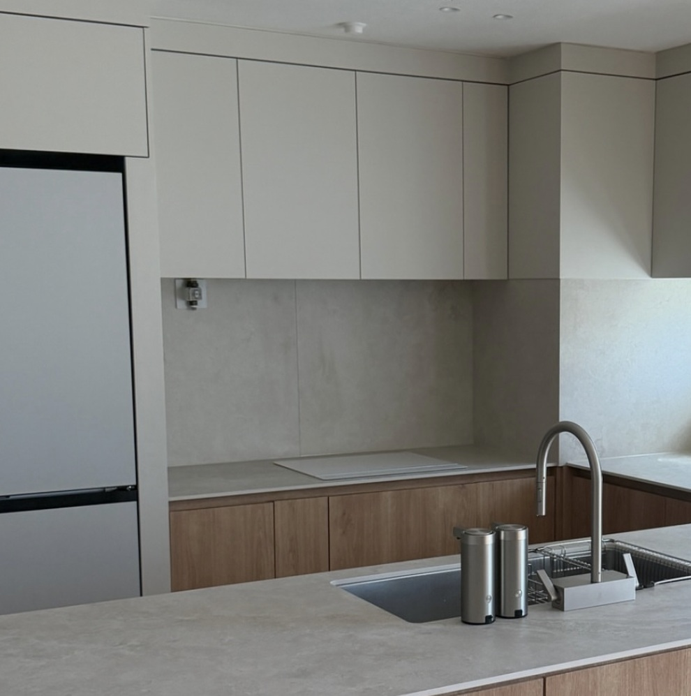
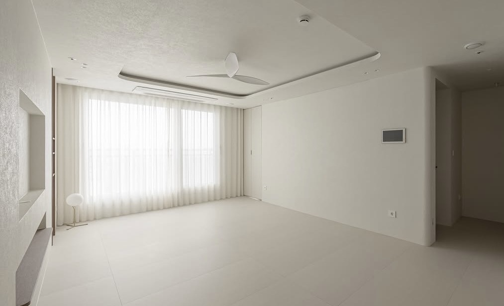
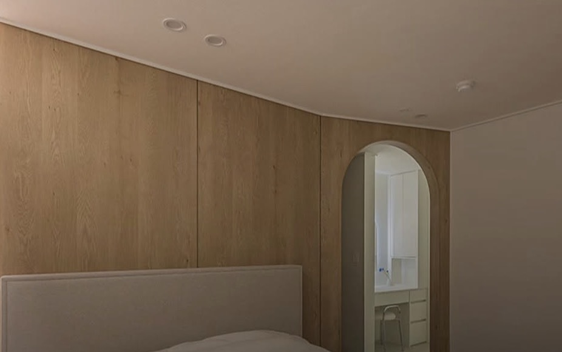
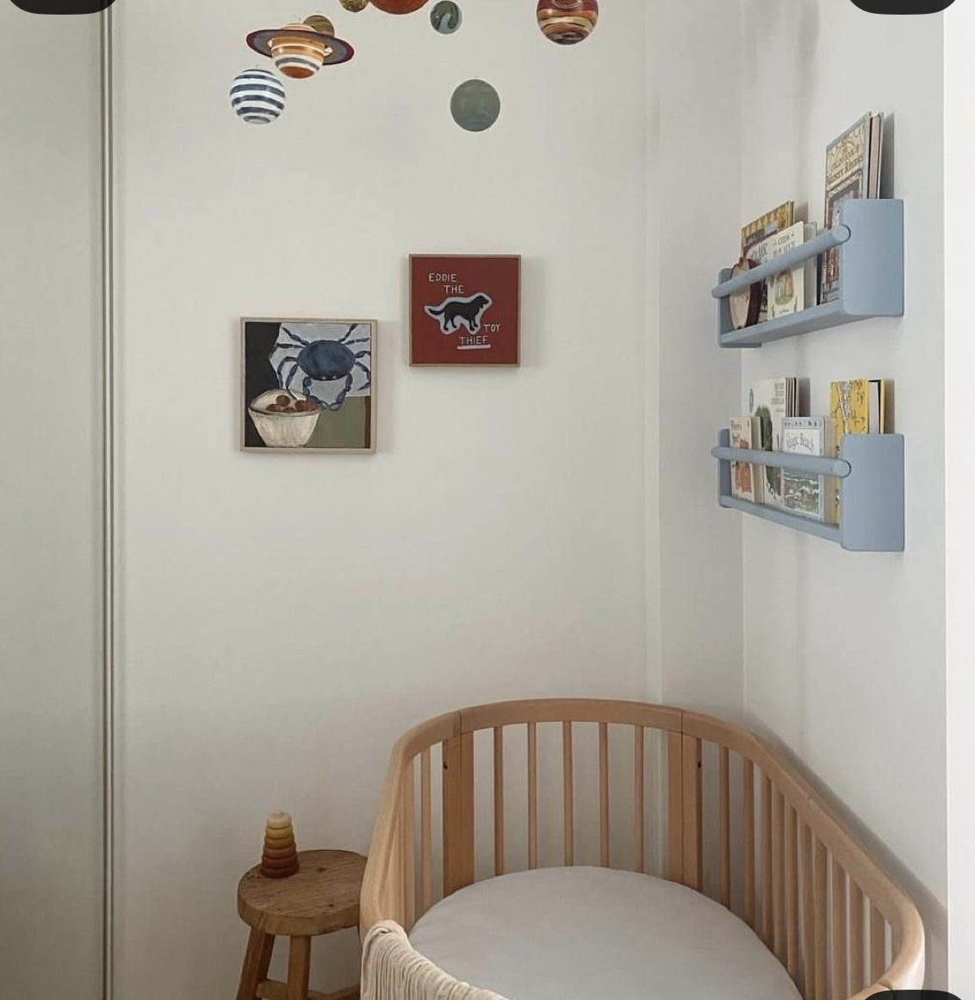
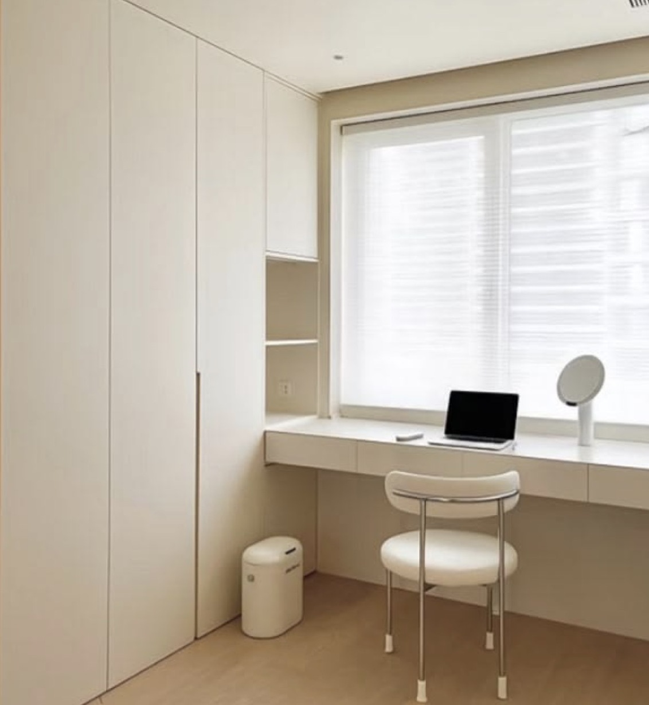
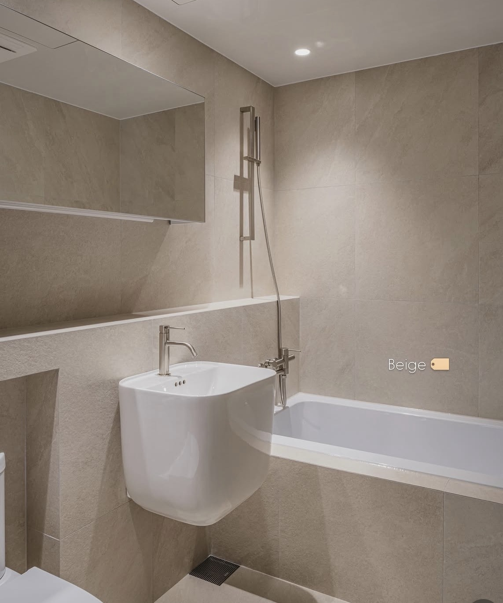
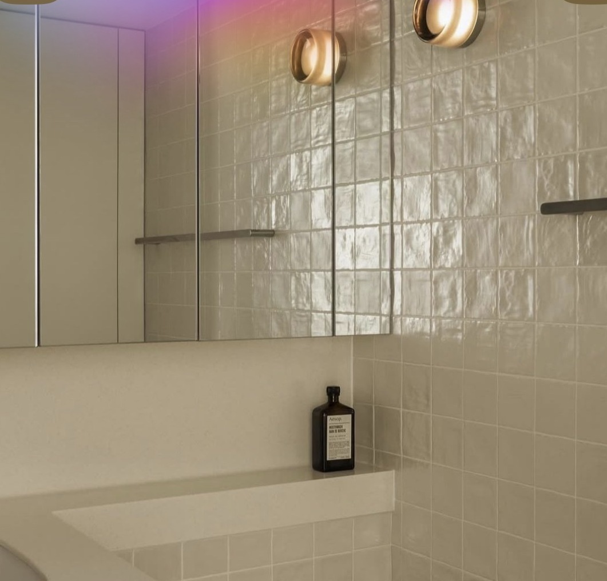
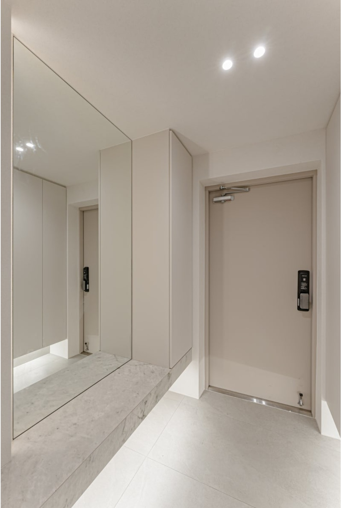

공용욕실 · 수전제품 링크제품 페이지 열기 ↗
↗공간별 상세 계획
실제 도면 → 디자인 참고 → 가구와 사용 → 전기·조명 → 상담 메모. 각 공간을 열어 업체와 함께 구체화하세요.

주방 ↗크림 상부장 · 우드 서랍 · 세라믹

거실 ↗기존 확장 거실 · 크림 + 밝은 우드

안방 ↗침대 + 붙박이장 · 크림 수납

아기방 · 4침실 ↗4침실 = 아기방 · 낮은 가구

서재 겸 드레스룸 · 5침실 ↗기존 확장 5침실 · 책상 + 옷장

공용욕실 ↗욕조 교체 계획 · 600 × 600 타일안

안방욕실 ↗세면대 위치 변경 · 600 × 1200 타일안

현관 ↗행잉 신발장 · 맞은편 낮은 벤치
ACTUAL PLANS & REFERENCES
우리 집 도면과 현장 실측
현장 실측과 원본 평면도 · 아래 참고 도면은 기존 원본을 따라 옮긴 자료
확대 후 가로·세로로 이동할 수 있습니다.
회색 바탕: 엘리베이터 · 전실 · 계단 / 공용부파란 선: 창호갈색 선: 문과 열림 방향확장 상태: 거실 · 후면 오른쪽 침실
이번에 바로잡은 구조: 후면 왼쪽 침실 문은 방의 남쪽 벽 끝에 있습니다. 후면 오른쪽 침실 문과 공용 욕실 문은 식당 쪽 벽에 각각 따로 있습니다. 세탁실은 주방 왼쪽의 작은 공간을 통해 연결되고, 안방 입구는 꺾인 벽 안쪽에 있습니다.
원도면의 이중 싱크·조리대·식탁·욕조·변기·세면대·창고·설비 공간도 함께 옮겼습니다. 내부 가구와 설비 표시는 원도면의 기호이며, 현재 설치 상태를 확인한 내용은 아닙니다.
사진 원본과 겹쳐 확인할 수 있도록 원본 좌표를 사용했습니다. 종이의 휨·사진의 원근 때문에 측량 도면으로 사용할 수는 없습니다. 흐릿한 기호의 상세와 문틀·벽 두께는 확인이 필요합니다. ‘기존 확장’은 사용자 확인을 적용한 표시이며, 남은 구조벽과 창호 상세는 미확인입니다.
원본에서 읽힌 공간 치수 보기
후면 왼쪽 침실 3.0 × 3.3m후면 오른쪽 침실 3.3 × 2.7m + 일부 돌출부주방 2.7 × 2.1m식당 2.7 × 2.9m안방 4.5 × 3.9m공용 욕실 2.4 × 1.7m안방 욕실 1.7 × 1.6m현관 1.3 × 1.65m
원본의 면적 산출식과 치수선을 읽은 값입니다. 위 치수는 확장 전 기준이며 시공·가구 제작에는 실측값을 사용합니다.
YOUR DESIGN REFERENCES
거실 상세 계획 ↗거실
밝은 바탕과 우드 포인트 / 새로 주신 사진을 중심으로
밝은 크림 벽·커튼을 바탕으로, 우드는 TV벽 또는 가구에 집중하는 방향입니다. 참고 사진의 타일 바닥과 우드 바닥은 서로 다른 선택안으로 봅니다.
우리 거실은 전면 왼쪽의 확장 공간입니다. 식당과 현관에서 들어오는 길, 오른쪽 안방 벽과 전면 창을 기준으로 가구를 배치해야 합니다. 사진 속 출입구나 큰 창의 위치를 그대로 옮기지 않습니다.
모서리의 둥근 마감과 우드 문 디테일을 참고할 수 있습니다. 생활 사진은 책·놀이·수납에 필요한 자리를 살펴보는 자료로 두고, 완성 디자인 사진과 구분했습니다.
YOUR REFERENCES
OUR KITCHEN IN DETAIL우리 집 주방 계획 자세히 보기 ↗실측·배치 도면, 디자인과 수납, 가전·조명, 상담 메모주방 · 수납
크림 + 우드 + 세라믹, 보이는 물건 없이 깔끔하게
업체 공사도면의 실제 배치안을 기준으로 주방·식탁·세탁실과 인접한 방문을 함께 확인합니다. 상세 페이지에서 현장 실측, 전기·조명과 제작 상세를 연결해 볼 수 있습니다.
상부장·키큰장은 크림, 하부장은 우드 톤으로 연결합니다. 하부 수납은 사진의 여닫이문 대신 모두 서랍으로 구성합니다.
세라믹 상판을 벽 미드웨이까지 같은 톤으로 연결해 선을 정리합니다. 오픈 선반 없이 수납은 모두 가리고, 개방감과 청소 편의성을 우선합니다.
키큰장 안에는 내부 서랍과 인출형 팬트리를 제안합니다. 가전도 문을 닫으면 가려지는 구성을 검토합니다.
가전 숨김장은 제품의 환기·사용 조건에 맞춰 설계합니다. 싱크 하부는 배관을 피한 서랍 구조가 필요하며, 참고 사진의 주방 형태와 제품은 확정 사양이 아닙니다.
주신 주방·수납 원본 사진도 보기
YOUR DESIGN REFERENCES
안방 상세 계획 ↗안방
새로 주신 자료: 크림 붙박이장 + 우드 헤드벽
크림색 닫힌 붙박이장과 우드 헤드벽을 핵심으로 참고합니다. 벽등과 패브릭은 부드러운 톤으로 연결합니다.
사진 속 아치 통로와 유리 구획은 해당 사례의 구조입니다. 우리 도면에는 안방 북쪽에 욕실, 남쪽에 발코니가 있으므로 사진의 통로를 그대로 만들지 않습니다. 침대와 장의 위치는 출입구와 발코니 접근을 확보한 뒤 정합니다.
YOUR DESIGN REFERENCES
아기방 · 4침실 상세 계획 ↗4번 침실 · 아기방
크림 바탕 + 우드 가구 + 작은 컬러 포인트
새로 주신 자료에 맞춰 기존 서재 제안을 아기방으로 변경했습니다. 크림 벽과 우드 침대에 파스텔 블루·레드 등 작은 포인트를 더하는 방향입니다.
낮은 잠자리, 손이 닿는 책 수납과 패브릭을 참고합니다. 사진의 오픈 책장은 아기방의 참고 요소이며, 주방의 닫힌 수납 요구와는 별도로 정할 수 있습니다.
도면상 후면 왼쪽 방입니다. 남쪽 벽 오른쪽의 방문과 북쪽 세탁실 측 창을 기준으로 배치하고, 사진 속 큰 외창을 그대로 적용하지 않습니다. 가구 크기·수납 고정·코드 위치는 실제 사용 단계에 맞춰 확인합니다.
YOUR DESIGN REFERENCES
서재 겸 드레스룸 · 5침실 상세 계획 ↗5번 침실 · 서재 겸 드레스룸
크림 붙박이장 + 작업대 + 화장대 수납
5번 방의 방향을 서재 겸 드레스룸으로 업데이트했습니다. 크림 붙박이장과 책상·화장대를 같은 톤으로 연결하고, 하부 서랍으로 작은 물건을 정리합니다.
사진의 창가 책상, 장 옆 책상, 화장대와 연결한 작업대는 배치 선택안입니다. 세 가지를 동시에 넣는 것으로 확정하지 않습니다.
도면상 확장된 후면 오른쪽 방입니다. 식당 쪽 출입구, 남동쪽 꺾인 구획과 전면의 확장 창을 기준으로 장·책상 깊이를 맞춥니다.
드레스룸 자료 폴더를 기준으로 이 방은 드레스룸 방향으로 정리했습니다. 닫힌 옷장과 화장대 수납을 중심으로 검토합니다.
드라이어와 헤어 도구는 서랍 내부의 분리 수납을 참고합니다. 확장된 창 앞과 식당 쪽 출입구를 막지 않는 장 배치가 필요합니다. 전원·코드·기기의 실제 수납 규격은 제작 전에 확인합니다.
YOUR DESIGN REFERENCES
공용욕실 상세 계획 ↗안방욕실 상세 계획 ↗욕실
밝은 베이지 타일, 거울 수납, 작은 조명 포인트
공용 욕실에는 원도면의 욕조·세면대·변기와 식당 쪽 출입구를 우선 기준으로 둡니다. 베이지 타일과 거울 수납을 적용하는 방향을 검토합니다.
안방 욕실은 더 작은 공간이며 안방에서 출입합니다. 첫 번째 사진의 큰 외창과 넓은 샤워 구역은 우리 원도면에 없으므로 배치 참고로 사용하지 않습니다. 사진은 색·타일·가구 디테일 자료입니다.
YOUR DESIGN REFERENCES
현관 상세 계획 ↗현관 · 중문
크림 수납장, 큰 거울, 우드 중문과 벽등
원도면 현관은 왼쪽 공용 전실과 거실 사이의 작은 공간입니다. 참고 사례처럼 긴 현관 복도를 만들 수 있다고 가정하지 않습니다.
크림 신발장·거울·밝은 바닥을 참고하되 수납 깊이와 중문 열림은 실제 현관 치수를 기준으로 맞춥니다.
중문에는 우드 프레임과 유리를, 벽에는 작은 조명 포인트를 검토합니다. 우드·원형 벽등 조합, 장식적인 벽등, 라운드 모서리를 비교할 수 있습니다.
ITEM WISHLIST
적용하고 싶은 아이템
수전 · 세면대 · 방문 손잡이 · 실링팬